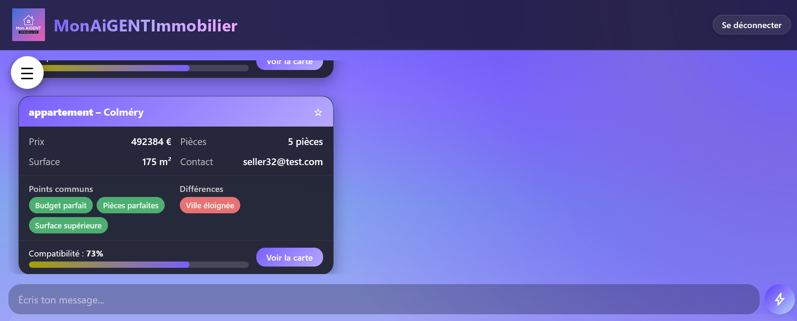
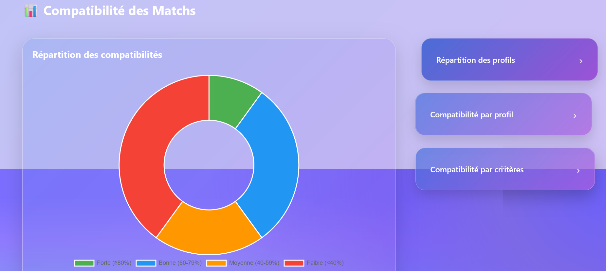
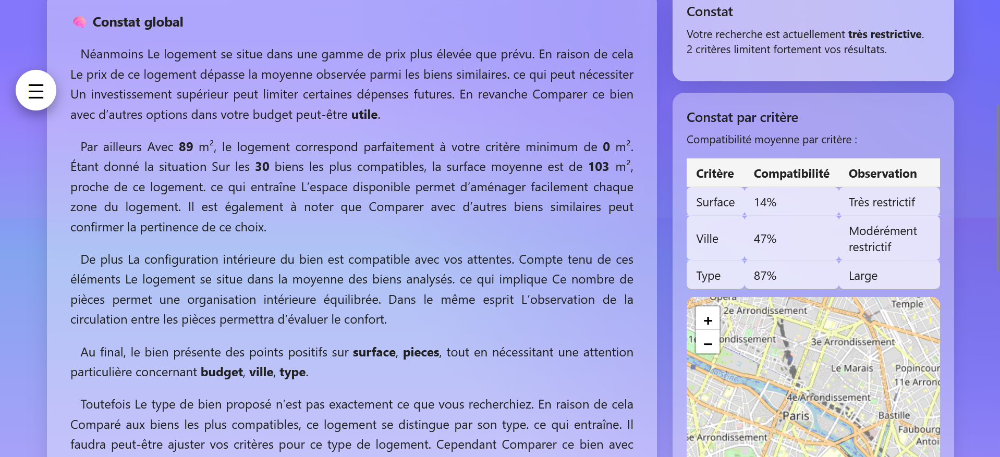

Matching
Notre moteur de matching analyse les profils acheteurs et vendeurs afin d'identifier les combinaisons les plus pertinentes selon plusieurs critères immobiliers.
Le moteur compare notamment : prix, surface, nombre de pièces et ville afin d'identifier les profils opposés les plus compatibles.
Étape 1 — Filtrage initial
Un premier filtre identifie les profils les plus proches selon les critères principaux afin d'obtenir les 30 utilisateurs les plus pertinents.
Étape 2 — Affinage des résultats
Ces profils sont ensuite analysés plus précisément selon les critères restants afin de conserver 10 profils réellement compatibles.
Étape 3 — Calcul de compatibilité
Un score de compatibilité est ensuite calculé pour établir un
top 5 des profils les plus pertinents.
Remarque : Plus le nombre d'utilisateurs est important, plus
les résultats sont intéressants.

Statistiques

Après le filtrage initial par ville, les 30 profils les plus proches sont analysés statistiquement afin d'offrir une vision claire de votre positionnement.
Plusieurs visualisations permettent d'interpréter ces résultats.
- Graphique donut : Répartition des profils selon leur pourcentage de compatibilité.
- Barres verticales : Scores précis de chaque profil parmi les 30 meilleurs utilisateurs.
- Barres horizontales : Analyse des tendances de chaque critère immobilier.
Vous pouvez également comparer ces profils directement sur la carte interactive.
Recommandations
À partir des 30 profils identifiés par le filtre principal, l'intelligence artificielle analyse les tendances et établit un diagnostic précis de votre positionnement.
Elle peut notamment identifier les critères trop restrictifs ou les ajustements qui augmenteraient votre compatibilité globale.
Des tableaux permettent également de visualiser l'évolution des résultats si certains critères sont modifiés.
